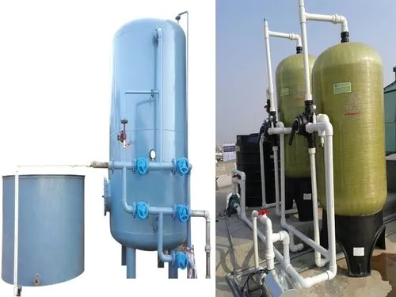

Packaged Softeners are designed to remove hardness-causing minerals like calcium and magnesium from water, providing soft and high-quality water for various industrial, commercial, and residential needs. Available in both MS (Mild Steel) and FRP (Fiberglass Reinforced Plastic) models, these systems are efficient, compact, and durable.
Overview
Packaged Softeners are water treatment systems designed to reduce hardness by removing minerals such as calcium and magnesium through an ion-exchange process. These softeners are compact, easy to install, and are available in MS (Mild Steel) and FRP (Fiberglass Reinforced Plastic) models to cater to different requirements. They are ideal for use in industries, commercial establishments, and residential areas requiring softened water.
Features
- Efficient Softening: Removes calcium and magnesium ions to soften hard water.
- MS & FRP Models: Available in both Mild Steel (MS) and Fiberglass Reinforced Plastic (FRP) options for durability and corrosion resistance.
- Compact Design: Space-efficient systems, easy to install in limited spaces.
- Low Maintenance: Requires minimal maintenance for long-term use.
- Automatic Regeneration: Automatic systems for enhanced efficiency and ease of use.
- Cost-Effective: Affordable softening solutions for both small and large-scale needs.
Process
The water softening process includes the following steps:
- Pre-Treatment: Water is pre-filtered to remove large particles and impurities before entering the softener.
- Ionic Exchange: The hard water passes through resin beads that exchange calcium and magnesium ions for sodium ions, softening the water.
- Regeneration: After a certain period, the resin is regenerated using a salt solution, which restores the ion exchange capacity.
- Post-Treatment: The softened water is polished for final use, ensuring it is free from hardness-causing minerals.

Applications
- Industrial: Used in various industries like food processing, pharmaceuticals, and manufacturing to protect equipment from scale buildup.
- Commercial: Ideal for hotels, restaurants, and hospitals requiring softened water for various operations.
- Residential: Ensures high-quality, soft water for household use, preventing scale buildup in pipes and appliances.
- Boilers and Cooling Systems: Used in power plants, boilers, and cooling systems to prevent scaling and improve efficiency.